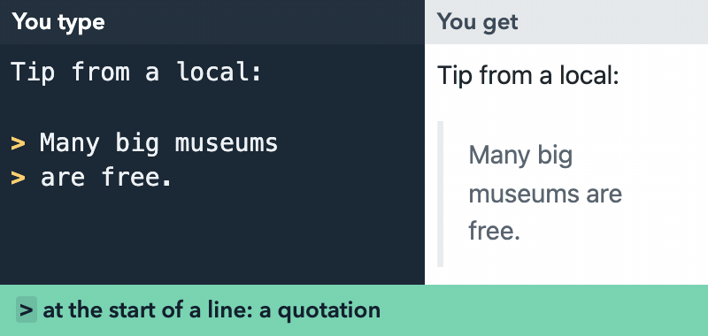
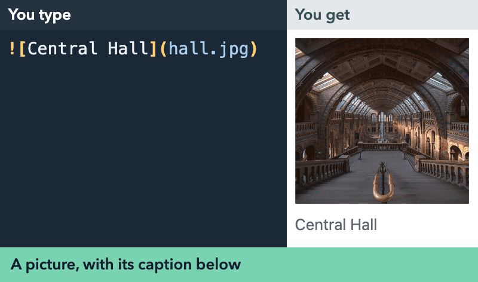
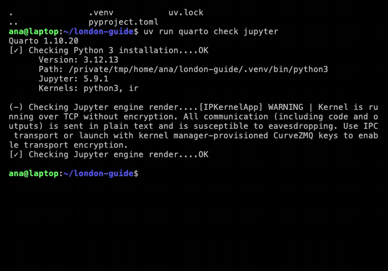

# A day in London
Start at the **British Museum**,
where entry is *free*.\
Get there by:
- Tube
- Bus
- ~~Car~~
> Tip: book a free timed ticket.
## Two sights
1. British Museum
2. Tower of London
| Sight | Price |
|-----------------|-------|
| British Museum | Free |
| Tower of London | Paid |
---
{width=15%
fig-alt="Big Ben's clock tower."}
Photo: John Dillenbeck, CC0.
Plan a route with
[TfL](https://tfl.gov.uk/).
Built with `quarto render`.
Stars kept, not italic: \*free\*
- [x] Contactless card
- [ ] Umbrella
```text
In a fence, **marks** stay put.
```4 Markdown, renderizado y reglas del proyecto
Palabras clave
Quarto, publicación reproducible, agentes de programación, Markdown, Python, EPUB, análisis de datos, k-means
La oficina de turismo quiere una guía para visitantes que pueda respaldar: una página que cualquiera pueda abrir en el teléfono, con cada dato rastreado hasta una fuente, y que se reconstruya en lugar de reescribirse cuando cambien los datos. La Figura 4.1 es donde termina la Parte II: la guía en su propio sitio web, con enlaces al mismo contenido en Word, PDF, PowerPoint, libro electrónico y diapositivas.
![Una página web en inglés titulada Visit London, bajo una barra de navegación con Guide, Dashboard y un menú Downloads. Debajo del título, la autoría, London Tourism Office, y la fecha de publicación. Una oración de bienvenida con London en negrita y riverside walks en cursiva; una lista numerada, Five sights to start with: British Museum, Natural History Museum, Tate Modern, National Gallery y Tower of London; una lista con viñetas, Getting around: Tube, Bus y Santander Cycles; y el comienzo de una sección Plan your visit con un enlace al TfL Journey Planner encima de una fotografía. En el margen derecho, Other Formats: MS Word, PDF, Powerpoint, ePub y Slides.](../media/figures/london-guide.png)
examples/london/london.qmd.
Empieza como una carpeta vacía y un archivo de texto plano en Markdown, una forma de escribir texto estructurado con unos pocos signos de puntuación. El agente escribe la mayor parte, pero Markdown es lo que tú revisas: la capa que lees, comparas entre versiones y corriges a mano cuando una oración está mal. La guía está en inglés, como los puntos de control del taller, para que puedas ponerte al día desde cualquiera de ellos; los prompts piden sus títulos en inglés.
En este capítulo hay más cosas nuevas que en cualquier otro: el agente, las reglas, la vista previa y el entorno. Avanza en orden: lee una sección, pega su prompt y mira el resultado antes de seguir; cada recuadro Pruébalo dice lo que deberías ver para entonces. Cuando un paso sale mal, no se pierde nada: una línea pegada en el agente restaura el estado final del capítulo (Sección 4.11).
En este capítulo
- Escribir una página en Markdown: títulos, listas, enlaces, imágenes, tablas, bloques de código.
- Renderizar un archivo, y mantener una vista previa en vivo corriendo a su lado.
- Escribir reglas de proyecto lo bastante concretas como para revisarlas.
- Preparar el propio entorno de Python de un proyecto con uv.
4.1 Markdown de un vistazo
Markdown es texto plano en el que unos pocos símbolos significan formato. Un # al comienzo de una línea crea un título; dos asteriscos a cada lado de una palabra la ponen en negrita. Tú escribes los símbolos; cuando Quarto renderiza el archivo, es decir, lo convierte en una página, se vuelven el formato que representan. Un archivo de Markdown es un archivo de texto común cuyo nombre termina en .md: cualquier editor de texto plano lo abre, y se lee bien incluso antes de renderizarlo.
Esta sección muestra las marcas una por una, antes del primer prompt; las secciones que siguen usan cada una en la guía. Cada animación pone lo que escribes, a la izquierda, junto a lo que obtienes, a la derecha. El lado derecho no está dibujado: cada paso de la izquierda se guardó en un archivo y lo renderizó Quarto 1.10.20, y la derecha muestra esa página, ampliada. Las animaciones están en inglés, como la guía. Cada una abre en su par terminado, que es todo lo que muestra un lector sin animaciones, y luego escribe la fuente desde el principio.
Dos cosas hacen que Markdown sea seguro de aprender probando:
- Nada se rompe. Una marca mal escrita, o abierta y nunca cerrada, suele aparecer en la página como un carácter común y, en el peor de los casos, le da formato a las palabras equivocadas. De cualquier forma, la página se sigue renderizando, el desliz es fácil de ver y lo corriges editando el texto.
- Probar no cuesta nada. Escribe unas líneas en un archivo nuevo llamado
try.mdy luego ejecutaquarto preview try.mden la terminal, en la carpeta de ese archivo (Sección 4.1.6). Abre la página en tu navegador, o imprime una dirección para abrir, y actualiza la página cada vez que guardas el archivo; Ctrl+C en la terminal lo detiene.
4.1.1 Títulos, párrafos y énfasis
Una línea que empieza con # y un espacio es un título, el nombre de una parte de la página. Un # da el título más grande, para el título de la página. Cada # adicional hace un título un nivel más pequeño (Figura 4.2), hasta seis.
![Dos paneles, You type (lo que escribes) a la izquierda y You get (lo que obtienes) a la derecha, sobre una nota en inglés. Terminada, la fuente tiene tres líneas con líneas en blanco entre ellas: # London, ## Museums y ### Tate Modern, con los signos # en amarillo. La página muestra London como un título grande, Museums más pequeño con una línea fina debajo, y Tate Modern más pequeño todavía. La nota dice More # signs, a smaller heading: más signos #, un título más pequeño. La animación escribe las líneas una por una, y cada título aparece en la página cuando su línea está completa.](../media/stills/md-headings.png)
# para el más grande, luego ## y ### para cada nivel hacia abajo. La página se muestra al ancho de una laptop, donde los tres tamaños se distinguen más.
El texto común no necesita ninguna marca. Las líneas que van una tras otra se unen en un solo párrafo, las cortes donde las cortes, y una línea en blanco, una línea sin nada, empieza un párrafo nuevo (Figura 4.3). Así que puedes partir una oración larga en varias líneas del archivo sin cambiar la página.
![Dos paneles, You type y You get, sobre una nota en inglés. Terminada, la fuente dice Welcome to en una línea y London. en la siguiente, luego una línea en blanco y See the sights. La página muestra dos párrafos: Welcome to London. en una línea, y See the sights. La animación escribe las dos primeras líneas, que la página une en una sola, luego la línea en blanco y la última línea, con la que la página empieza un párrafo nuevo. La nota dice A blank line starts a new paragraph: una línea en blanco empieza un párrafo nuevo.](../media/stills/md-paragraphs.png)
Los asteriscos alrededor de las palabras las enfatizan: dos a cada lado para negrita, uno a cada lado para cursiva. Dos virgulillas (~) a cada lado tachan el texto, para algo que ya no es cierto. Estas marcas van en pares. Hasta que se escribe el par de cierre, el de apertura se muestra tal como se escribió, como al comienzo de la Figura 4.4.
![Dos paneles, You type y You get, sobre una nota en inglés. Terminada, la fuente dice Walk by the **river** at *sunset*. en dos líneas, luego una línea en blanco y Go by ~~car~~ Tube., con los asteriscos y las virgulillas en amarillo. La página muestra river en negrita, sunset en cursiva y car tachado. La animación primero escribe Walk by the **river sin los asteriscos de cierre, y la página muestra los dos asteriscos tal como se escribieron. Cuando se escribe el par de cierre, river pasa a negrita; luego sunset pasa a cursiva y car queda tachado. La nota nombra cada marca a medida que se escribe.](../media/stills/md-emphasis.png)
**bold**, *italic* y ~~struck through~~. Hasta que se escribe su ** de cierre, el par de apertura se muestra como dos asteriscos.
4.1.2 Listas, citas y líneas
Una línea que empieza con - y un espacio es un elemento de una lista con viñetas. Un número y un punto, como 1., y luego un espacio, empiezan un elemento de una lista numerada (Figura 4.5). Deja una línea en blanco antes de una lista: sin ella, sus elementos se pegan al párrafo anterior.
![Dos paneles, You type y You get, sobre una nota en inglés. Terminada, la fuente tiene - Tube y - Bus, una línea en blanco, y luego 1. British Museum y 2. Tate Modern. La página muestra una lista con viñetas de Tube y Bus y, debajo, una lista numerada de British Museum y Tate Modern. La animación escribe primero los elementos con viñeta y luego los numerados, y cada lista aparece en la página cuando está escrita. La nota dice Leave a blank line above a list: deja una línea en blanco antes de una lista.](../media/stills/md-lists.png)
- y un espacio para un elemento con viñeta, 1. y un espacio para uno numerado, con una línea en blanco entre las dos listas.
Un > al comienzo de una línea crea una cita en bloque: una cita, separada del texto por una barra a su lado (Figura 4.6). Empieza cada una de sus líneas con >.

amarillo: Many big museums y are free. La página muestra la primera línea como texto común y, debajo, la cita en gris junto a una barra vertical. La animación parte de la línea común y escribe las dos líneas citadas, y luego la cita aparece en la página. La nota dice > at the start of a line: a quotation, es decir, > al comienzo de una línea: una cita." class="anim img-fluid figure-img" loading="lazy">> al comienzo de cada línea separa las líneas como una cita.
Tres guiones en una línea propia, con una línea en blanco antes y después, dibujan una línea horizontal: una línea que cruza la página y separa dos partes (Figura 4.7).
![Dos paneles, You type y You get, sobre una nota en inglés. Terminada, la fuente dice Day one: museums., una línea en blanco, tres guiones amarillos, una línea en blanco y Day two: parks. La página muestra las dos oraciones con una línea gris fina que cruza la página entre ellas. La animación parte de la primera oración, escribe los guiones, tras lo cual aparece la línea en la página, y luego escribe la segunda oración debajo. La nota dice --- between blank lines: a line across, es decir, --- entre líneas en blanco: una línea que cruza.](../media/stills/md-rule.png)
--- en una línea propia, entre líneas en blanco.
4.1.3 Enlaces e imágenes
Un enlace tiene dos partes: las palabras en las que se hace clic, entre corchetes, y luego la dirección que abren, entre paréntesis, sin espacio entre las dos (Figura 4.8). Los corchetes solos se muestran tal como se escribieron. Una dirección suele ser demasiado larga para una fila de la pantalla, así que el editor la ajusta y muestra el resto en la fila siguiente, como a la izquierda de la Figura 4.8. Sigue siendo una sola línea, escrita sin presionar Enter.
![Dos paneles, You type y You get, sobre una nota en inglés. Terminada, la fuente dice Plan with en una línea, luego Visit London entre corchetes seguido de https://www.visitlondon.com/ entre paréntesis, ajustado en una tercera fila. La página muestra Plan with Visit London., con Visit London en azul y subrayado. La animación parte del texto común, agrega los corchetes, que la página muestra tal como se escribieron, y luego escribe la dirección entre paréntesis, y las palabras se vuelven un enlace. La nota dice Click it to open https://www.visitlondon.com/: haz clic para abrir esa dirección.](../media/stills/md-link.png)
Una imagen se escribe como un enlace con un ! adelante: su pie de figura entre corchetes, y luego su archivo entre paréntesis (Figura 4.9). Aquí el archivo, hall.jpg, está en la misma carpeta que el archivo de Markdown. La Sección 4.7 agrega lo que además necesita una imagen publicada: un tamaño y un texto alternativo, una descripción para quien no puede verla.

!, el pie de figura entre corchetes, el archivo entre paréntesis. Foto del Central Hall del Natural History Museum: Julian Herzog, CC BY 4.0, vía Wikimedia Commons.
Una imagen también puede ser un enlace. Pon la imagen entera donde van las palabras de un enlace, dentro de sus corchetes: [](address) (Figura 4.10). La página se ve igual, pero un clic en la foto abre la dirección, aquí la página del museo para visitantes.
 dentro de corchetes, seguido de https://www.nhm.ac.uk/visit.html entre paréntesis, ajustado en tres filas. La página muestra la misma fotografía del Central Hall, con su pie, que la imagen sin enlace. La animación parte de la imagen sola, escribe un corchete de apertura delante y el corchete de cierre y la dirección después, y la página queda igual. La nota dice Click the picture to open https://www.nhm.ac.uk/visit.html: haz clic en la imagen para abrir esa dirección.](../media/stills/md-image-link.png)
4.1.4 Todas las marcas juntas
La Tabla 4.1 y la Tabla 4.2 reúnen las marcas que usa este libro, las de arriba y unas pocas más, cada una con la sección donde la guía la necesita por primera vez. Vuelve a ellas mientras escribes.
| Escribes | Obtienes |
|---|---|
# Visit London |
un título; ## es el nivel siguiente hacia abajo (Sección 4.3) |
| una línea en blanco entre líneas | un párrafo nuevo (Sección 4.3) |
\ al final de una línea |
un salto de línea dentro del párrafo |
*italic*, **bold** |
cursiva, negrita (Sección 4.3) |
~~Car~~ |
|
- Tube |
un elemento con viñeta (Sección 4.6) |
1. British Museum |
un elemento numerado (Sección 4.6) |
- [ ] Umbrella |
un elemento con una casilla vacía; [x] la marca |
Para cortar una línea sin empezar un párrafo nuevo, termínala con \. Dos espacios al final también funcionan, pero “la barra invertida es más fácil de ver, y los editores que eliminan los espacios finales al guardar no la quitan” (Quarto, Markdown Basics; cita traducida).
| Escribes | Obtienes |
|---|---|
[TfL](https://tfl.gov.uk/) |
un enlace, TfL (Sección 4.7) |
 |
la imagen, con el pie “Big Ben” (Sección 4.7) |
> Book ahead. |
una cita (Sección 4.7) |
`quarto render` |
quarto render, en tipo de código |
líneas entre ```text y ``` |
un bloque de código, que se muestra exactamente como se escribió (Sección 4.9) |
| Sight | Price | sobre |---|---| |
una tabla con una fila de encabezado (Sección 4.8) |
--- entre líneas en blanco |
una línea horizontal |
\*free\* |
*free*, con asteriscos y todo: una \ antes de una marca la deja tal como se escribió |
Aquí están todas esas marcas en un solo archivo, toy.md, una nota corta sobre Londres, en inglés, sin configuración y sin código:
quarto render toy.md lo convierte en toy.html, la Figura 4.11. Compáralos línea por línea: las líneas de cada párrafo se unieron, salvo donde una \ cortó una; “Car” aparece tachado; los asteriscos escapados alrededor de “free” y los asteriscos dentro del bloque de código siguieron siendo asteriscos.
![Una página web en inglés al ancho de un teléfono. El título A day in London; una oración con British Museum en negrita y free en cursiva, luego, en una línea nueva, Get there by, sobre una lista con viñetas: Tube, Bus y Car, con Car tachado. Una cita con una barra gris: Tip: book a free timed ticket. Un título más pequeño, Two sights, sobre una lista numerada y una tabla de dos columnas con las dos atracciones y sus precios, Free y Paid. Una línea horizontal, y luego una foto pequeña de Big Ben con el pie Big Ben. Un párrafo: el crédito de la foto, un enlace azul a TfL, quarto render en tipo de código, y free entre dos asteriscos. Una casilla marcada para Contactless card y una vacía para Umbrella. Al final, una línea en tipo de máquina de escribir en la que los asteriscos alrededor de las marcas se muestran, no se aplican.](../media/figures/toy-md.png)
quarto render toy.md hace con el archivo, al ancho de un teléfono: una captura de toy.html tal como lo renderiza Quarto 1.10.20. Foto de Big Ben: John Dillenbeck, CC0, vía Wikimedia Commons.
Detente y piensa
Una línea de texto y, justo debajo, sin línea en blanco entre ellas, una línea de tres guiones. ¿La página muestra una línea horizontal?
Respuesta
No: la línea de texto se convierte en un título de nivel 2. Una línea subrayada con guiones es otra forma de escribir uno, tanto en el Markdown de GitHub como en el de Quarto, y por eso la línea horizontal de la Tabla 4.2 necesita una línea en blanco antes.
4.1.5 El Markdown de GitHub y el de Quarto
Markdown viene en dialectos. GitHub Flavored Markdown (GFM) es el que usa GitHub para lo que la gente escribe ahí, como los archivos README y los issues. Es “un superconjunto estricto de CommonMark”, una especificación precisa de Markdown, con cinco extensiones: tablas, listas de tareas, tachado, enlaces automáticos y la prohibición de algo de HTML crudo (especificación de GFM, versión 0.29-gfm, consultada el 2026-11-12; cita traducida).
Quarto “se basa en Pandoc y usa su variante de markdown como sintaxis de documento subyacente” (Quarto, Markdown Basics, consultado el 2026-11-12; cita traducida). El Markdown de Pandoc lee las mismas marcas básicas que GFM, toma de él las listas de tareas y agrega más: atributos entre llaves, notas al pie, listas de definiciones, citas bibliográficas y matemáticas, entre otras (Pandoc User’s Guide, consultada el 2026-11-12). Tres diferencias sorprenden a quien aprendió Markdown en GitHub:
- Una lista necesita una línea en blanco antes; sin ella, se pega al párrafo anterior.
- El tachado necesita dos virgulillas,
~~Car~~, porque un solo par,~2~, crea un subíndice. - El texto entre corchetes de una imagen es su pie de figura en Quarto, mientras que GitHub lo usa como texto alternativo; el texto alternativo de Quarto va en
fig-alt(Sección 4.7).
4.1.6 Dos comandos: render y preview
Quarto convierte un archivo en una página con cualquiera de dos comandos, escritos en la terminal en la carpeta del archivo (quarto render --help y quarto preview --help, Quarto 1.10.20, consultado el 2026-11-12):
quarto render toy.md-
escribe la salida una vez, aquí
toy.html, y se detiene.--to docxelige otro formato. Úsalo para hacer un archivo terminado, el que envías o publicas. quarto preview toy.md- renderiza el archivo, sirve la página en una dirección local y lo vuelve a renderizar cada vez que se guarda el archivo; Ctrl+C lo detiene. Úsalo mientras escribes, en una pestaña de la terminal para él solo.
Un archivo .md simple no necesita configuración para renderizarse, como muestra toy.md. La Sección 4.4 ejecuta los dos comandos sobre la guía.
4.2 Una carpeta para la guía
La guía tiene su propia carpeta en tu carpeta personal, al lado del repositorio quarto-workshop (una carpeta de proyecto con su historial de Git) que clonaste durante la preparación (Sección 3.6), para que sus puntos de control estén siempre en ../quarto-workshop/checkpoints/. Al final del capítulo, tu carpeta personal, ~, se ve así:
~
├── quarto-workshop/
└── london-guide/
├── AGENTS.md
├── london.md
├── london.html
├── data/
├── images/
├── pyproject.toml
├── uv.lock
└── .venv/AGENTS.md: las reglas que el agente lee primero.london.md: la fuente de la guía, el archivo que revisas;london.htmlse renderiza a partir de él.data/eimages/: datos citados y fotos con crédito, copiados y nunca editados.pyproject.toml,uv.locky.venv/: los paquetes, sus versiones exactas y el entorno instalado.
Crea la carpeta e inicia el agente en ella:
Tú haces
cd ~
mkdir -p london-guide
cd london-guide
claude # or: codex, or: agyClaude Code primero pregunta si confías en la carpeta nueva (Sección 3.4): la creaste para este trabajo, así que di que sí. Los prompts siguientes copian archivos de ../quarto-workshop/, que está fuera de la carpeta del proyecto, así que el agente te pide permiso la primera vez que lee ahí. Apruébalo, o inicia Claude Code con claude --add-dir ../quarto-workshop para permitirlo desde el principio (Codex tiene la misma opción, --add-dir).
4.3 Una primera página: un título y una bienvenida
Pídele a tu agente
Crea london.md con un título de nivel 1 "Visit London" y un párrafo de bienvenida, en inglés, con una frase en negrita y otra en cursiva.El agente escribe:
# Visit London
Welcome to **London**: free museums, royal history and *riverside walks*.# empieza un título, y la cantidad de signos # fija su nivel: ## es el nivel siguiente hacia abajo. Los asteriscos dobles marcan el texto en negrita y los simples, en cursiva. Una línea en blanco separa los párrafos. Eso ya es un documento completo.
4.4 Mírala convertirse en una página web
Pídele a tu agente
Renderiza london.md con quarto render y dime qué archivo escribió.
Probablemente ejecute
quarto render london.md → london.html
Tú haces
en una segunda pestaña de la terminal:
cd ~/london-guide
quarto preview london.mdabre la dirección que imprime · Ctrl+C la detiene
El renderizado escribe london.html una vez. La vista previa (Sección 4.1) lo vuelve a renderizar cada vez que se guarda london.md, incluso cuando lo guarda el agente, así que la página en tu navegador sigue cada cambio (Figura 4.12). Imprime una línea como Browse at http://localhost:4200/ (el número varía) y suele abrir esa página en tu navegador; si no lo hace, abre tú la dirección.
![Dos paneles. A la izquierda, la fuente de london.md, en inglés, a medida que el agente la guarda, con cada sección nueva resaltada: primero el título y la bienvenida, luego una lista numerada de cinco atracciones, luego una sección Plan your visit con un enlace y un consejo de un local, y luego una lista Before you go. A la derecha, la página que sirve quarto preview se recarga después de cada guardado y muestra la sección nueva, renderizada como títulos, una lista numerada, un enlace, una cita y un bloque de código.](../media/stills/quarto-preview-reload.png)
london.md (izquierda), quarto preview lo vuelve a renderizar y la página se recarga (derecha). Una grabación real de quarto preview con las ediciones que hace este capítulo.
Deja la vista previa corriendo de aquí en adelante. Es la forma más rápida de revisar lo que hizo cada prompt.
AdvertenciaError frecuente
Una vista previa y un renderizado del mismo archivo en el mismo momento chocan: los dos escriben archivos temporales con los mismos nombres, y uno falla con un error como readfile 'london.quarto_ipynb'. Mientras corre una vista previa, deja que ella renderice. Antes de que el agente renderice varios formatos a la vez (Sección 5.5), detén la vista previa con Ctrl+C, y vuelve a iniciarla después.
4.5 Reglas para la guía
La Sección 2.5 presentó AGENTS.md, el archivo de reglas que un agente lee al comienzo de cada sesión. La guía necesita uno ahora, antes de que lleguen datos o fotos, porque todos los prompts siguientes se apoyan en él:
Pídele a tu agente
Crea AGENTS.md para este proyecto, en inglés. Alcance: una guía para visitantes de Londres para la oficina de turismo, escrita una vez y reutilizada para cada público. Reglas: cada número sale de un archivo citado en data/, las fotos tienen licencia abierta, llevan crédito y no muestran personas, nunca inventes datos, deja data/ e images/ sin cambios, y llama a los conteos de ALVA "ALVA member attractions". Muéstrame el archivo.
Probablemente ejecute
escribe AGENTS.md: un alcance y una lista de reglas
Tú haces
apruebas · lo lees: ¿dice lo que querías decir?
Cada regla está ahí por una razón con la que el proyecto se va a encontrar. Cada número sale de un archivo citado: la guía cita conteos de visitantes, y un agente al que se le pide un número que no tiene puede producir uno plausible; una regla de que cada cifra se calcule a partir de un archivo con fuente elimina esa tentación, y te da algo que revisar. Fotos con licencia abierta y sin personas: una guía publicada necesita imágenes que pueda reutilizar, y las fotos de personas identificables plantean preguntas de consentimiento que no necesita. Deja data/ e images/ sin cambios: las entradas son evidencia, y las ediciones van en el análisis, no en la evidencia. “ALVA member attractions” (atracciones miembro de ALVA): los conteos vienen de la Association of Leading Visitor Attractions, que solo enumera a sus miembros, así que decir “las atracciones más visitadas de Londres” sería afirmar de más.
La versión del proyecto terminado dice, en parte:
## Rules
- Every number comes from a cited file in `data/`: each row carries `source`, `url` and
`retrieved`. Never estimate or invent a figure or a fact.
- ALVA counts only its member sites: write "ALVA member attractions".
- Photos are openly licensed, credited from `images/ATTRIBUTION.md`, and show no people.
- Keep `data/` and `images/` unchanged.Lee lo que escribió el agente y edítalo tú si la redacción no es la que querías. Es el contrato de tu proyecto con el agente, y las reglas funcionan mejor cuando son lo bastante concretas como para revisarlas. Sirve cualquier editor de texto plano, o el de la propia terminal: en una pestaña nueva, cd ~/london-guide, y luego nano AGENTS.md abre el archivo; Ctrl+O y Enter lo guardan, y Ctrl+X sale (Apéndice B).
4.6 Cinco atracciones y cómo moverse
Pídele a tu agente
En london.md, agrega una lista numerada "Five sights to start with" (British Museum, Natural History Museum, Tate Modern, National Gallery, Tower of London) y una lista con viñetas "Getting around": 🚇 Tube, 🚌 Bus, 🚲 Santander Cycles.## Five sights to start with
1. British Museum
2. Natural History Museum
3. Tate Modern
4. National Gallery
5. Tower of London
## Getting around
- 🚇 Tube
- 🚌 Bus
- 🚲 Santander Cycles1. empieza una lista numerada y - una con viñetas; deja una línea en blanco antes de una lista. Las cinco atracciones son las cinco cuyas visitas grafica la guía más adelante, a partir de los datos de ALVA. La lista es un punto de partida, no un ranking. Entre las diez atracciones miembro de ALVA más visitadas de Londres en 2025, las cinco, en el orden de la lista, están en los puestos segundo, primero, tercero, cuarto y octavo; tres atracciones que no están en la lista tuvieron más visitas que la Tower of London.
4.7 Planear una visita: un enlace, una foto y un consejo
Pídele a tu agente
Copia ../quarto-workshop/examples/london/images aquí. En london.md, agrega "Plan your visit": un enlace al TfL Journey Planner, images/big-ben.jpg al 30% de ancho con texto alternativo y un pie con el crédito de images/ATTRIBUTION.md, y una cita en bloque "Tip from a local".Plan your route with the [TfL Journey Planner](https://tfl.gov.uk/plan-a-journey/).
{width=30% fig-alt="Big Ben's clock tower and the Palace of Westminster against a blue sky with white clouds."}
> **Tip from a local:** many big museums are free. Book a free timed ticket to skip the queue.[text](address) es un enlace y  una imagen; el texto entre corchetes se vuelve el pie de figura de la imagen. El {…} después de la imagen es una extensión de Quarto y Pandoc: width le da tamaño y fig-alt guarda su texto alternativo, la descripción que anuncian los lectores de pantalla y que aparece si la imagen no carga. > empieza una cita. La Figura 4.13 es esa foto.
NotaPor qué funciona
El texto alternativo no es decoración. Sin él, una imagen en una página web o en un libro electrónico se anuncia como “imagen”, o ni siquiera se anuncia, para quien no puede verla, y un pie de figura solo suele decir quién tomó una foto más que lo que muestra. Escribirlo es también una pequeña prueba de si una imagen dice algo: si el texto alternativo cuesta escribirlo, quizá la imagen no haga falta.
La foto se eligió según las reglas: es de dominio público (CC0), su licencia y la ausencia de personas se revisaron en su página de Wikimedia Commons (2026-10-30), y el crédito sale de images/ATTRIBUTION.md, que registra el autor, la licencia y la fuente de cada foto.
4.8 Las atracciones de un vistazo, a partir de datos citados
La tabla de atracciones de la guía necesita datos: el rango de precio de cada atracción, su estación de metro más cercana y su página oficial. Salen de un archivo que copia el agente, no de su memoria:
Pídele a tu agente
Copia ../quarto-workshop/examples/london/data aquí. En london.md, agrega una tabla "Sights at a glance" a partir de data/sights.csv: una foto de images/ (height=60, sin unidad; texto alternativo), Sight, Price band, Nearest tube y un enlace "Read more" a su `official_page`. Da el crédito de las fotos (images/ATTRIBUTION.md) y de las fuentes.data/sights.csv es un archivo CSV (valores separados por comas): una tabla en texto plano, una línea por fila, con comas entre las columnas. Tiene una fila por atracción y dato, y cada fila nombra su propia fuente y la fecha en que se descargó: quince datos de nueve páginas distintas. La Tabla 4.3 muestra tres.
data/sights.csv. Cada dato también lleva su source (una descripción) y su url.
| sight | fact | value | retrieved |
|---|---|---|---|
| British Museum | price_band | Free | 2026-10-30 |
| British Museum | nearest_tube | Tottenham Court Road | 2026-11-01 |
| Tate Modern | nearest_tube | Southwark | 2026-11-01 |
La tabla de london.md es Markdown simple:
| Photo | Sight | Price band | Nearest tube | More |
|---|-----|---|-----|----|
| {height=60} | British Museum | Free | Tottenham Court Road | [Read more](https://www.britishmuseum.org/visit) |Las barras verticales separan las columnas, y la fila de guiones bajo el encabezado lo marca como encabezado; la cantidad relativa de guiones fija el ancho relativo de las columnas. Un enlace o una imagen funcionan dentro de una celda.
La guía todavía no tiene código, así que el agente lee el archivo y escribe sus valores en la tabla: una copia citada de los datos, no un vínculo con ellos. El capítulo siguiente hace que los números se calculen, y la Sección 7.5 muestra lo que cuesta una copia.
Detente y piensa
El agente llenó la tabla de atracciones. ¿Cómo compruebas que un rango de precio salió del archivo y no de la memoria del agente?
Respuesta
Busca la fila price_band de esa atracción en data/sights.csv: ahí están su valor, su fuente y la fecha de descarga. Para una tabla entera, pídele al agente que nombre la fila detrás de cada celda, y luego revisa algunas tú.
AdvertenciaError frecuente
Dos trampas en esta sola tabla. Primero, el formato PDF que se hace más adelante (con Typst) rechaza los tamaños de imagen en píxeles de CSS, así que {height=60px} falla con “cannot parse length”; un número sin unidad, {height=60}, funciona en todas partes, y por eso el prompt dice “sin unidad”. Segundo, una tabla de PowerPoint no puede contener imágenes, así que la versión pptx de la guía muestra en cada celda el texto alternativo de la foto.
Algunos sitios oficiales, incluidos el del British Museum y el de Historic Royal Palaces, responden a las solicitudes automáticas con 403 Forbidden, así que un agente que revisa sus enlaces puede informar esos dos como rotos. Ábrelos en un navegador antes de creerlo.
4.9 Una lista que conserva su forma
Pídele a tu agente
En london.md, agrega una sección "Before you go": una lista de tres elementos para marcar, dentro de un bloque de código de texto simple.## Before you go
```text
[ ] Contactless card or Oyster card
[ ] Free museum tickets booked
[ ] Comfortable shoes and an umbrella
```Tres comillas invertidas abren y cierran un bloque de código delimitado, y la palabra después de las comillas de apertura nombra el lenguaje: text, python, bash. El texto dentro de un bloque se muestra exactamente como se escribió, por eso los corchetes y los saltos de línea sobreviven. En el capítulo siguiente, escribir {python} después de las comillas invertidas en lugar de python convierte un bloque que se muestra en uno que se ejecuta.
4.10 Un entorno para el código que viene
Un entorno de Python es una carpeta que contiene una versión de Python y los paquetes que usa un proyecto, separados de los de cualquier otro proyecto. Los paquetes son las bibliotecas adicionales que importa el código de Python, como pandas para tablas o matplotlib para gráficos. El capítulo siguiente ejecuta Python, y el código nunca corre en el vacío: lo que hace depende de la versión de Python y de la versión exacta de cada paquete.
Lograr que todo eso coincidiera solía ser una lección en sí misma: instalar conda o un Python del sistema, a veces un compilador, arreglar el PATH (la lista de carpetas donde la terminal busca programas), registrar un kernel de Jupyter, y luego depurarlo en cada laptop. uv ahora lo hace en un solo paso, para un proyecto a la vez. Descarga la versión de Python que necesita un proyecto, y su archivo de bloqueo (lockfile), uv.lock, registra la versión exacta de cada paquete: “captura los paquetes que se instalarían en todos los marcadores de Python posibles, como el sistema operativo, la arquitectura y la versión de Python” (documentación de uv, consultada el 2026-10-31; cita traducida), así que un solo archivo reproduce el mismo entorno en cada Mac, Windows y Linux. Otros lenguajes combinan de la misma forma un archivo de proyecto con un archivo de bloqueo: renv.lock en R, package-lock.json en JavaScript, Cargo.lock en Rust.
NotaPor qué funciona
¿Por qué el archivo de bloqueo necesita saber cuál es la computadora? Muchos paquetes científicos contienen C, C++ o Fortran compilados, construidos por separado para cada sistema operativo y procesador (Intel y AMD x86_64, o Apple y otros ARM arm64). La etiqueta de plataforma de cada archivo de paquete, como macosx_11_0_arm64, nombra el sistema al que corresponde (Python Packaging Authority, consultado el 2026-10-31), así que el archivo de bloqueo enumera el archivo correcto para cada sistema.
Pídele a tu agente
Dale a esta carpeta su propio entorno de Python con `uv`: ejecuta `uv init --bare` y luego `uv add ipykernel nbclient nbformat pyyaml pandas matplotlib plotly`. De ahora en adelante ejecuta `quarto` y `python` a través de `uv run`, y agrega esa regla a AGENTS.md. Muéstrame la línea de Python de `uv run quarto check jupyter`.
Probablemente ejecute
escribe pyproject.toml (los paquetes), uv.lock (sus versiones exactas) y .venv/ (el entorno instalado) · agrega una regla a AGENTS.md

uv init --bare, uv add con los paquetes de la guía, y Quarto encontrando el Python propio del proyecto. Una grabación real con una cuenta de demostración; se cortó el primer renderizado de 40 segundos de la comprobación del motor.
Los cuatro paquetes ipykernel, nbclient, nbformat y pyyaml son lo que Quarto necesita para ejecutar celdas de Python; pandas, matplotlib y plotly son lo que va a usar el código de la guía. No hace falta el paquete jupyter, más grande, con sus aplicaciones de cuadernos.1
1 Medido en una prueba el 2026-10-30, con una sola conexión rápida, una instalación en frío del conjunto de paquetes más grande de la Parte III tardó 8 segundos con uv y 31 segundos con pip más jupyter. Eso compara la ruta vieja con la nueva, no los dos instaladores en igualdad de condiciones, ya que la ejecución con pip también instaló jupyter.
NotaPor qué funciona
¿Por qué uv run delante de cada comando? Quarto se niega a ejecutar Python al lado de una carpeta .venv que no está activada (“There is an unactivated Python environment in .venv”). uv run activa el entorno del proyecto para ese único comando, y antes pone .venv al día con uv.lock. Así, un proyecto copiado, o un punto de control, reconstruye su propio entorno en su primer uv run, y la regla de AGENTS.md hace que el agente lo siga usando después de un reinicio.
Detente y piensa
¿Qué archivo te dice la versión exacta de pandas que usa la guía: pyproject.toml o uv.lock?
Respuesta
uv.lock. pyproject.toml enumera los paquetes que pidió el proyecto, cada uno solo con una versión mínima aceptable (pandas>=…); uv.lock registra la única versión instalada, para cada sistema. Ese es el archivo que hace que el uv run de un colega construya el mismo entorno que el tuyo.
4.11 Si te quedas atrás
El prefacio fijó la regla, y dibujó sus pasos en la Figura 2: dos minutos sin avanzar, ponte al día. La línea al final del último Pruébalo es la única para ponerte al día de este capítulo, porque su punto de control contiene el final de todo el capítulo, sea cual sea el paso en el que te trabaste. Pegada en el agente, hace lo siguiente:
Probablemente ejecute
respalda london-guide/ en ../london-guide-backup-01-<time> · copia el punto de control · renderiza london.md · revisa london.html
Luego sigue con el capítulo siguiente (Capítulo 5). El README se escribió para el taller, así que el agente también puede remitirte a una de sus diapositivas; en este libro, el paso siguiente es siempre el que va después del recuadro para ponerte al día. El README enumera los mismos pasos, que también puedes ejecutar a mano (Figura 4.15). No se pierde nada: cada respaldo es una carpeta nueva con la fecha y la hora en el nombre, así que los respaldos anteriores se conservan.
![Una terminal en london-guide, que solo contiene un london.md con una errata en el título. Un comando tar copia todo menos .venv a una carpeta de respaldo llamada london-guide-backup-01 con la fecha y la hora. cp copia el punto de control 01 en la carpeta. uv run quarto render london.md crea el entorno virtual desde uv.lock, instala 51 paquetes y renderiza, y termina con Output created: london.html. ls muestra los archivos de la guía, y ls de la carpeta de arriba muestra london-guide al lado de su respaldo.](../media/stills/catch-up.png)
.venv/), la copia del punto de control y un renderizado que primero reconstruye el entorno desde uv.lock. Una grabación real con una cuenta de demostración.
NotaPor qué funciona
El respaldo deja afuera .venv/ porque puede pesar cientos de megabytes y se reconstruye desde uv.lock en el siguiente uv run. Copiarlo sería lento e inútil.
Resumen
- Markdown es texto plano en el que unas pocas marcas significan formato; una marca mal escrita no rompe nada y aparece en la página, donde la ves y la corriges.
- Markdown es la capa que lees y revisas; Quarto lee el de Pandoc, que acepta las marcas de GitHub y agrega más.
- El Markdown simple se renderiza sin configuración; mientras corre una vista previa, deja que ella renderice.
AGENTS.mdcontiene reglas lo bastante concretas como para revisarlas, escritas antes de que lleguen los datos.- Los datos salen de archivos citados, nunca de la memoria del agente.
- uv fija los paquetes del proyecto en
uv.lock, yuv runlos usa.
La guía todavía no tiene cifras de visitantes, porque hasta ahora un número solo se podía escribir a mano, y un número escrito a mano queda viejo el día en que se revisa su fuente. El capítulo siguiente hace que la guía los calcule.
Lecturas adicionales
- Quarto, Markdown Basics (consultado el 2026-11-12).
- GitHub Flavored Markdown Spec, versión 0.29-gfm, y CommonMark (consultados el 2026-11-12).
- Learn Markdown in Y minutes, que también tiene una versión en español (consultado el 2026-10-30).
- Pandoc, Pandoc’s Markdown, la sintaxis completa detrás de la de Quarto (consultado el 2026-11-12).
- Quarto, Virtual Environments (consultado el 2026-10-30).
- Astral, uv, project layout and the lockfile y running commands (consultados el 2026-10-31).
- Python Packaging Authority, Platform compatibility tags (consultado el 2026-10-31).